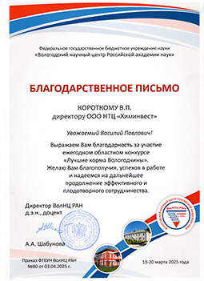

Современные решения для животноводства, основанные на
научных исследованиях и многолетнем практическом опыте.
ООО НТЦ «Химинвест» создано, как малое предприятие в 1995 году. Предприятие занимается глубокой лесохимической переработкой леса.
Целью предприятия является - продвижение и популяризация кормовых добавок для животноводства, где основными действующими компонентами являются природные биоактивные вещества; в данном производственном сегменте нами накоплен большой опыт создания продуктов для кормления сельскохозяйственных животных.
Идея компании – новая блочно-модульная лесохимия, приближенной к источнику сырья.
Мы стремимся привлечь внимание общественности к вопросу глубокой переработки леса в наиболее полной мере!
Представляем цикл видеоматериалов под общим названием "Актуальные вопросы кормления сельскохозяйственных животных в условиях интенсификации".
"Творческие" встречи с аграриями, меценатская деятельность, спонсорство.


(использование наших добавок в передовых хозяйствах)
Владимирская область
Краснодарский край
Кировская область
Юрий Николаевич Прытков, д-р сельхоз. наук, директор Аграрного института ФГБОУ ВПО «Мордовский государственный университет им. Н.П. Огарева», профессор кафедры зоотехнии, г. Саранск
"Вопрос достаточно актуальный, особенно для тех регионов, которые обладают большими лесными массивами, где ведется переработка леса, а отходов остается много, очень эффективно можно использовать эти отходы круглогодично для животноводства. Цель ставится такая, чтобы максимально, с учетом физиологических особенностей и биологических возможностей сельскохозяйственных животных, использовать отходы переработки леса в различных вариантах"
Альбина Павлова, зоотехник СПК «Колхоз им. В. Куйбышева» Городецкого района Нижегородской области
"После скармливания хвойно-энергетической добавки отелы у нас прошли без осложнений, телята были жизнеспособными. Масса телят была в пределах физиологической нормы. У коров повышался аппетит; даже в первый день после отела у коров опытной группы был очень хороший аппетит. Инволюция матки происходила за 22–26 дней, то есть это на 20 дней быстрее, чем у коров контрольной группы"
Эльмира Кутуева, зоотехник ОАО «Мордовгосплем», республика Мордовия
"После применения добавки качество спермы у быков-производителей улучшилось. В ходе эксперимента по скармливанию хвойно-энергетической добавки у опытных групп животных улучшилась активность и концентрация спермы по сравнению с исходными данными. Активность увеличилась у опытных групп на 57% и 115%, это достаточно большие значения"

Николай Петрович Буряков, д-р биологических наук, профессор, заведующий кафедрой кормления и разведения животных ФГБОУ ВО РГАУ–МСХА им. К.А. Тимирязева, г. Москва
"Отмечено, что хвойно-энергетическая добавка, обогащенная каротиноидами и фитонцидами леса, естественно эффективнее, чем скармливание просто глицерина либо пропиленгликоля. Что касается активированного угля – если он имеет специфическую пористую структуру – мелкоячейстую, то есть другое его качество, и в зависимости от размеров молекул, которые нужно удержать на поверхности, поглощает широкий спектр молекулярных загрязнений, не выводя питательные элементы – это, несомненно, перспективно"
Владимир Викторович Дмитриев, главный зоотехник СПК «Колхоз им. В. Куйбышева» Городецкого района Нижегородской области
"Мы приобрели активную угольную добавку и ввели её в рацион коров, в состав комбикорма. Здоровье коров стабилизировалось. Теперь мы регулярно используем добавку в профилактических целях, не допускаем до того чтобы это потребовалось в лечебных целях, - просто проводим профилактику"
Ирина Васильевна Бритвина, кандидат сельскохозяйственных наук, доцент, заведующий кафедрой внутренних незаразных болезней, хирургии и акушерства ФГБОУ ВО «Вологодская государственная молочнохозяйственная академия имени Н.В. Верещагина», г. Вологда
"Видно положительное влияние при применении ХЭД, рекомендуем скармливать данную комплексную добавку 150-200 г. на голову в сутки на кормовую смесь либо на силос. Считаем – перспективно кормить добавкой до 60-го дня – пика раздоя"
Андрей Ширшиков, старший зоотехник ЗАО «Луховское», республика Мордовия
"При использовании активной угольной добавки отпала у нас необходимость применять традиционные медицинские препараты для лечения диареи телят. Случаи возникновения желудочно-кишечных заболеваний практически исчезли, а срок их развития значительно сократился. Появилась положительная динамика роста телят"
Виктор Иванович Рощин, д-р хим. наук, профессор, действительный член Российской академии естественных наук (РАЕН), заведующий кафедрой химии древесины и лесохимических продуктов ФГБОУ ВПО «Санкт-Петербургского государственного лесотехнического университета имени С.М. Кирова»
"Смоляные кислоты древесной зелени, в составе хвойно-энергетической добавки, хорошо адаптированы для организма. В процессе эволюции они могут частично заменить антибиотики, а жирные кислоты выступать как носитель энергии"